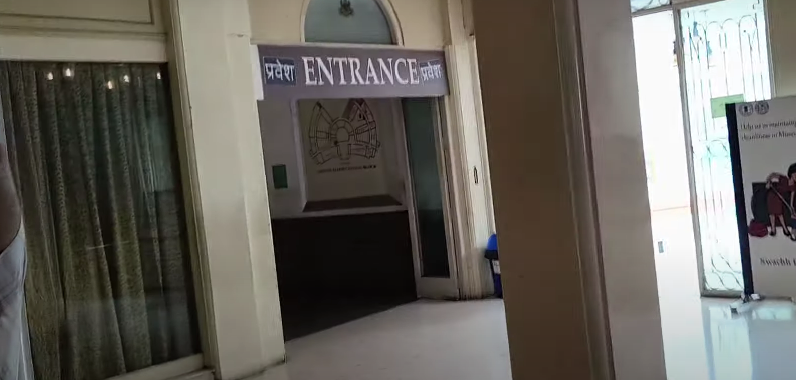
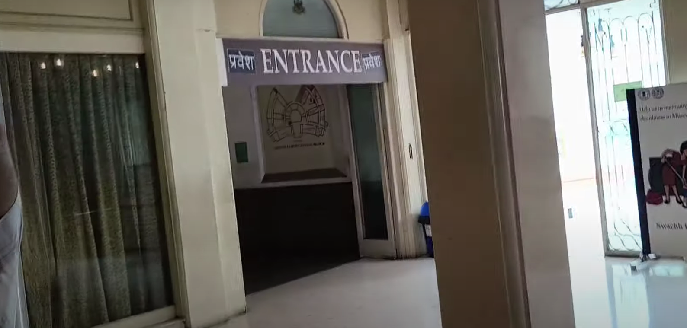
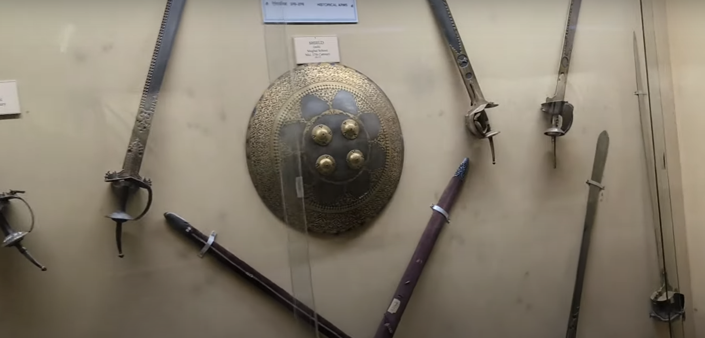

Exhibit Pathway - Section 2
 

Directions
Take a left after exiting Section 1 to move towards Section 2, which focuses on medieval history.
About
This area showcases medieval artifacts, including weaponry, armor, and manuscripts from the period.
Exhibit Pathway - Weapons Section

Directions
Continue to the left corridor after Section 2 to reach the Weapons Section, where you will find a variety of historical weaponry.
About
The Weapons Section contains a wide range of arms and armory used across different eras, offering an insight into the evolution of military technology.